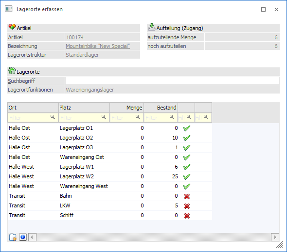
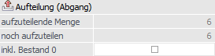
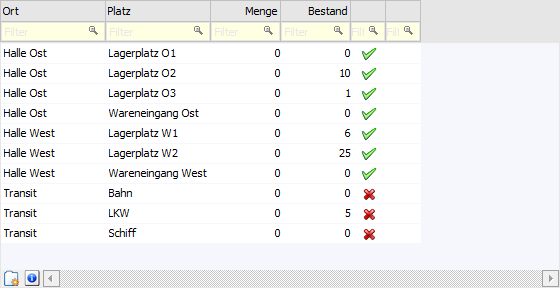

Wird in der Lagerbuchhaltung, der Belegerfassung, der Umbuchung - Lagerorte oder in der Produktion ein Artikel angesprochen, welcher eine Lagerortstruktur in sich trägt, dann öffnet sich nach Eingabe der Artikelnummer automatisch das Fenster "Lagerorte erfassen". In diesem können den Lagerorten Mengen (z.B. für die Auslieferung) zugewiesen werden.
Hinweis
Das Fenster "Lagerorte erfassen" wird nicht geöffnet, wenn lt. Aufteilungsoptionen (WinLine FAKT - Stammdaten - Lagerorte - Aufteilungsoptionen) eine Erfassung nicht erfolgen darf.

Artikel
Ø Artikel
An dieser Stelle wird die Artikelnummer angezeigt, für welche Lagerorte erfasst werden.
Ø Bezeichnung
In diesem Feld wird die Bezeichnung des Artikels dargestellt.
Ø Lagerortstruktur
Hier wird die Lagerortstruktur des Artikels angezeigt.
Aufteilung

Ø Aufteilung (x)
In der Überschrift des Bereichs wird angezeigt, ob es sich um einen Zugang (Einlagerung) oder einen Abgang (Entnahme) handelt.
ü  - Einlagerung
- Einlagerung
ü  - Entnahme
- Entnahme
Ø aufzuteilende Menge
An dieser Stelle wird die Menge des Artikels vom Ausgangsfenster dargestellt.
Ø noch aufzuteilen
Hier wird die Menge, welche noch aufgeteilt werden kann bzw. muss, angezeigt.
Ø inkl. Bestand 0 (nur in Belegerfassung - Verkauf und WinLine PPS - Materialverbrauch)
Durch Aktivierung der Option "inkl. Bestand 0" werden bei einem Verkaufsbeleg oder einem Materialverbrauch der WinLine PPS auch die Lagerorte ohne Bestand (tiefste Hierarchie-Ebene lt. Lagerortstruktur) in der Tabelle angezeigt (z.B. für Rücknahmen).
Lagerorte
Ø Suchbegriff / Lagerort / Vorbelegung
Je nach Erfassungsmodus (siehe auch Button "Einzelerfassung / Zusatzerfassung") wird an dieser Stelle das Feld "Suchbegriff", "Lagerort" oder "Vorbelegung" angeboten.
ü Suchbegriff
Es wird nicht mit
dem Modus "Einzelerfassung" gearbeitet, wodurch in der Tabelle der Lagerorte
alle auswählbaren Orte aufgelistet werden. Mit Hilfe des Suchbegriffs kann in
den Orten der Tabelle gesucht werden, wobei die Felder "Bezeichnung", "EAN-Code"
und "RFID" bei der Suche berücksichtigt werden.
ü Lagerort
Es wird mit dem Modus
"Einzelerfassung" gearbeitet, wodurch in der Tabelle der Lagerorte keine Orte
angezeigt werden. Mit Hilfe der Autovervollständigung bzw. des Matchcodes können
an dieser Stelle die jeweiligen Orte ausgewählt werden.
ü Vorbelegung (WinLine FAKT)
Wenn
das Fenster in der Belegerfassung geöffnet wird und eine Lagerortvorgabe
vorhanden ist (lt. Beleg oder Artikelstamm; siehe auch Automatische Lagerortaufteilung), so
steht das Eingabefeld "Vorbelegung" zur Verfügung. In diesem wird der Lagerort
bzw. die Lagerort-Hierarchie gemäß der Vorgabe angezeigt und schränkt dadurch
automatisch das Ergebnis der Tabelle "Lagerorte" ein.
ü Vorbelegung (WinLine PPS)
Wenn
das Fenster in der WinLine PPS geöffnet wird und eine Lagerortvorgabe vorhanden
ist (lt. Produktionsauftrag oder Stücklistenstamm), so steht das Eingabefeld
"Vorbelegung" zur Verfügung. In diesem wird der Lagerort bzw. die
Lagerort-Hierarchie gemäß der Vorgabe angezeigt und schränkt dadurch automatisch
das Ergebnis der Tabelle "Lagerorte" ein.
Ø Lagerortfunktionen
Je nach Erfassungsbereich werden an dieser Stelle die Lagerortfunktionen statisch dargestellt und zur Anzeige bzw. Auswahl der Lagerorte genutzt.
Hinweis
Die Lagerfunktionen werden wie folgt berücksichtigt:
ü Belegerfassung => eigene Definition gemäß Belegart
ü Kundenbestellungen bearbeiten => Warenausgangslager
ü Lieferantenlieferungen bearbeiten => Wareneingangslager
ü Lagerbuchhaltung -> Buchungsschlüssel "L" => Wareneingangslager
ü Lagerbuchhaltung -> Buchungsschlüssel "V" => Warenausgangslager
ü Lagerbuchhaltung -> Buchungsschlüssel "P" => Produktionslager
ü Inventur => alle Lagerortfunktionen
ü Lagerorte umbuchen => eigene Definition gemäß Lagerortumbuchungsart
ü Handels- bzw. Fertigungsstückliste (Komponenten) => Produktionslager
ü WinLine PPS => Produktionslager
Tabelle "Lagerorte"

In der Tabelle der Lagerorte werden die Mengen für die jeweiligen Lagerorte erfasst. Je nach Erfassungsmodus (siehe Button "Einzelerfassung / Zusatzerfassung") werden in der Tabelle hierbei die Orte direkt dargestellt oder müssen über das Feld "Lagerort" zunächst ausgewählt werden.
Hinweis
Die erfassbaren Lagerorte werden wie folgt ermittelt:
ü Alle Lagerorte gemäß Lagerortstruktur
ü Von diesen Orten nur die Lagerorte mit passenden Lagerortfunktionen
ü Von diesen Orten, abhängig von der Option "Selektion über Lagerort-Zuordnung" im Artikelstamm nur jene Lagerorte, welche mit Hilfe des Programms "Lagerorte - Zuordnung" freigegeben wurden
ü Von diesen Orten wiederum nur jene Orte, welche die aktivierten Lagerorteigenschaften des Artikels ebenfalls aktiviert haben
ü Handelt es sich um einen Verkauf oder einen Verbrauch (Produktion) nur Lagerorte mit Bestand
ü Sortierung der Lagerorte in der Tabelle erfolgt nach "Standardlagerort", "Priorität absteigend" und "Anlagezeitpunkt" (pro Hierarchie-Ebene ausgewertet) aufsteigend
Ø Lagerort 1 bis Lagerort 6
In diesen Spalten (hier "Lagerort 1 = Ort" und "Lagerort 2 = Platz") wird der Name des jeweiligen Lagerorts angezeigt.
Ø Menge / Bestand Ist
An dieser Stelle erfolgt die Eingabe der Menge pro Lagerort.
Ø Bestand
Hier wird der aktuelle Bestand des Lagerorts angezeigt.
Ø Bestand Soll (nur bei Inventur)
Sofern die Option "Sollmengen anzeigen" im Register "Optionen" der Inventur aktiviert wurde, wird in dieser Spalte die Soll-Menge des Lagerorts angezeigt. Dieser ermittelt sich wie folgt:
ü Ohne Zählliste
Es wird das
Inventurdatum aus dem Register "Optionen" zur Ermittlung herangezogen.
ü Mit Zählliste
Die Soll-Menge
des Lagerorts wird immer aufgrund des "Inventurdatum von" (gemäß Zählliste)
gebildet, da dieses Datum im späteren Verlauf auch zur Ermittlung möglicher
Differenzen verwendet wird.
Ø Menge gespeichert (nicht bei "Inventur")
Sobald die Lagerorterfassung gespeichert wurde und erneut aufgerufen wird, erfolgt an dieser Stelle die Anzeige der zuvor gespeicherten Zuweisung.
Ø Menge bereits geliefert (nicht bei "Inventur" und "Produktion")
In diesem Feld wird die bereits gelieferte Menge dargestellt.
Ø verf. Bestand
In der Spalte "verf. Bestand" wird über ein Icon symbolisiert, ob der Bestand des Lagerorts verfügbar ist oder nicht.
ü - verfügbar
Der Bestand des Lagerorts
ist verfügbar.
ü - nicht verfügbar
Der Bestand des
Lagerorts ist nicht verfügbar.
Ø Bestandsunterschreitung (nur bei Kundenbestellungen bearbeiten)
In dieser Spalte wird mit Hilfe des Icon angezeigt, dass bei diesem Lagerort nicht genügend Bestand vorhanden ist, d.h. es liegt eine Bestandsunterschreitung vor.
Ø Standardlagerort (nicht bei "Inventur")
In dieser Spalte wird durch das Icon symbolisiert, dass es sich um den bzw. einen Standardlagerort für den Artikel handelt.
Ø Inventurdatum (nur bei Inventur)
In der Spalte "Inventurdatum" wird das Inventurdatum eingetragen, wobei dieses dem aktuellen Wirtschaftsjahr entsprechen muss.
Ø Info (nur bei Inventur)
In der Spalte "Info" wird das Icon  angezeigt, sobald es für den Lagerort
eine ungebuchte Inventurerfassung gibt. Das Inventurdatum der alten Erfassung
liegt dabei vor dem Einlogdatum und würde in der Folge überschrieben werden.
angezeigt, sobald es für den Lagerort
eine ungebuchte Inventurerfassung gibt. Das Inventurdatum der alten Erfassung
liegt dabei vor dem Einlogdatum und würde in der Folge überschrieben werden.
Hinweis
Soll die alte Erfassung nur gelöscht und nicht überschrieben werden, so kann dieses durch einen Doppelklick auf das Icon ausgelöst werden. Nach dem Bestätgien einer Sicherheitsabfrage wird das neue Icon dargestellt und die alte Inventurerfassung beim Speichern gelöscht.
Ø Optionale Spalten
Neben den Standard-Spalten können über das Kontextmenü der rechten Maustaste (Funktion "Spalten anzeigen / verstecken") jederzeit folgende Spalten hinzugefügt bzw. entfernt werden:
ü EAN
Es wird der EAN-Code des
Lagerorts angezeigt.
ü RFID
Es wird die RFID des
Lagerorts dargestellt.
ü Priorität
An dieser Stelle wird
die Priorität des Lagerorts angezeigt.
ü Kurzcode
Es wird der Kurzcode
des Lagerorts angezeigt.
ü Kontakt
In dieser Spalte wird
die Kontaktnummer des Lagerorts ausgewiesen.
ü Name
Es wird der Name des
Kontakts (siehe Spalte "Kontakt") angezeigt.
ü Priorität (Standardlagerort)
(nicht bei "Inventur")
Hier wird die Priorität des Standardlagerorts (gemäß
"Lagerorte - Zuordnung") angezeigt.
ü Gesamtbestand 1 / Gesamtbestand
2
In diesen Spalten werden die Bestände des Lagerorts, unabhängig vom
aktuellen Artikel, ausgewiesen.
ü Mitarbeiter (nur bei Inventur)
Mit Hilfe der optional
einblendbaren Spalte "Mitarbeiter" kann ein Mitarbeiter der Inventurerfassung
zugeordnet werden.
ü Notiz (nur bei Inventur)
Über die Spalte "Notiz"
kann der Inventurerfassung ein Text (bestehend aus maximal 255 Zeichen)
zugeordnet werden.
Hinweis
Die Spalten "Priorität", "Kurzcode", "Kontakt", sowie "Name" müssen bereits vor Öffnen des Erfassungsfensters (mit Hilfe der Funktion "Tabelleneinstellungen speichern) in der Tabelle vorhanden sein. Ansonsten werden die Spalten ohne Inhalt angezeigt.
Tabellenbuttons
Ø neuer Lagerort
Durch Anwahl des Buttons "neuer Lagerort" wird das Programm "Lagerortestamm" zur Erfassung neuer bzw. Änderung bestehender Orte geöffnet.
Ø Info Lagerortbestand
Mit Hilfe des Buttons "Info Lagerortbestand" wird das Auswertungsfenster Bestand - Lagerorte geöffnet und zeigt alle Artikel des ausgewählten Lagerorts an.
Ø Ausgabe Excel
Durch Anwahl des Buttons "Ausgabe Excel" wird der Inhalt der Tabelle an Microsoft Excel übergeben.
Ø Tabelleneinstellungen speichern
Die Spalten einer Tabelle können grundsätzlich an beliebige Positionen verschoben, bzw. in der Breite entsprechend angepasst werden. Durch Anwahl des Buttons "Tabelleneinstellungen speichern" werden die Einstellungen benutzerspezifisch gespeichert und bei dem nächsten Aufruf des Programmpunktes wieder vorgeschlagen.
Ø Gesamteinstellungen speichern…
Im Gegensatz zu "Tabelleneinstellungen speichern" können mit "Gesamteinstellungen speichern" mehrere Tabellenaufbauten gespeichert und nach Wunsch geladen werden. Zusätzlich werden Sonderfunktionen der Tabelle (z.B. "Spalte gruppieren") ebenfalls bei der Speicherung bedacht.
Buttons
Ø Ok
Durch Anwahl des Buttons "Ok" bzw. der Taste F5 werden die erfassten Mengen gespeichert und die Summe in das Ausgangsfenster zurück übergeben.
Ø Ende
Mit Hilfe des Buttons "Ende" bzw. der Taste ESC wird das Fenster geschlossen und alle nicht gespeicherten Eingaben verworfen.
Ø Einzelerfassung / Zusatzerfassung
Abhängig vom Ausgangsfenster stehen unterschiedliche Erfassungsmodi zur Verfügung:
ü Button nicht aktiviert
Die
Erfassung von Lagerorten findet direkt über die in der Tabelle "Lagerorte"
aufgeführten Orte statt.
ü Button "Einzelerfassung" - Kundenbestellungen bearbeiten / Lieferantenlieferungen
bearbeiten
Der Button steht nicht zur Verfügung, d.h. die Erfassung von
Lagerorten findet direkt über die in der Tabelle "Lagerorte" aufgeführten Orte
statt.
ü Button "Zusatzerfassung" - Inventur
Durch Anwahl des Buttons
kann der Inhalt der Tabelle "Lagerorte" um bisher nicht aufgeführte Orte ergänzt
werden.
ü Button "Einzelerfassung" - Alle
weiteren Programme
In dem Modus "Einzelerfassung" werden keine Orte in der
Tabelle "Lagerorte" vorgeschlagen. Die Auswahl erfolgt ausschließlich mit Hilfe
der Autovervollständigung bzw. des Matchcodes.
Hinweis
Die Anwahl des Buttons wird benutzerspezifisch, abgängig vom Ausgangsfenster und der Aufteilungsart, gespeichert.
Ø Neu aufteilen
Die Menge aus dem Hauptfenster wird automatisch auf die Lagerorte der Tabelle aufgeteilt. Je nach Prozess wird hierbei unterschiedlich vorgegangen:
ü Einlagerung
Bei einer
Einlagerung (z.B. Einkaufsbeleg) wird die gesamte Menge dem ersten Lagerort der
Tabelle zugeordnet.
ü Entnahme
Bei einer Entnahme
(z.B. Verkaufsbeleg) wird die Menge gemäß der Bestände der Lagerorte zugeteilt.
Hierbei wird die Reihenfolge der Orte in der Tabelle berücksichtigt.
Hinweis
Wird mit dem Modus "Einzelerfassung" gearbeitet, so müssen zunächst Lagerorte für die automatische Aufteilung in die Tabelle eingefügt werden. In der Inventur steht die Funktion nicht zur Verfügung.
Ø Menge auf 0 setzen
Durch Anwahl dieses Buttons wird die Spalte "Menge", bei allen Zeilen der Tabelle, auf 0 gesetzt.
Ø Wiederherstellen
Sobald die Lagerorterfassung gespeichert und erneut aufgerufen wird, steht der Button "Wiederherstellen" zur Verfügung. Mit dessen Hilfe können die zuvor gespeicherten Zuweisungen wiederhergestellt werden.
Hinweis
Die Funktion steht in den Programmen Kundenbestellungen bearbeiten und Lieferantenlieferungen bearbeiten nicht zur Verfügung.
Ø Info Artikelbestand
Durch Anwahl des Buttons "Info Artikelbestand" wird die Auswertung Artikel - Lagerorte geöffnet. In dieser werden die Lagerorte des Artikels mit Bestand angezeigt.
Ø VCR-Buttons
Über die so genannten VCR-Buttons kann in den Programmen Belegerfassen, Lagerbuchhaltung und Lagerorte - Umbuchung durch Mausklick zwischen den Datensätzen (Erfassungszeilen) geblättert werden. Hierbei werden nur Zeilen mit Artikeln angesprochen, welche eine Lagerortstruktur hinterlegt haben.
ü  Damit kann
der erste Datensatz angesprochen werden.
Damit kann
der erste Datensatz angesprochen werden.
ü  Damit kann
der vorherige Datensatz angesprochen werden.
Damit kann
der vorherige Datensatz angesprochen werden.
ü  Damit kann
der nächste Datensatz angesprochen werden.
Damit kann
der nächste Datensatz angesprochen werden.
ü  Damit kann
der letzte Datensatz angesprochen werden.
Damit kann
der letzte Datensatz angesprochen werden.
Hinweis
In der Belegerfassung werden bei dieser Art der Navigation Artikelzeilen mit Menge 0 automatisch übersprungen.